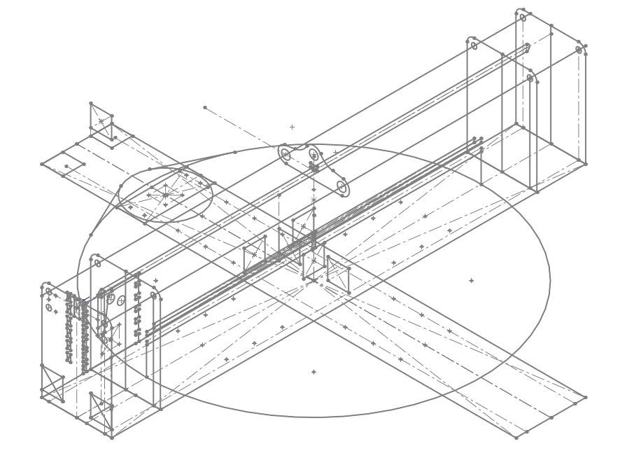
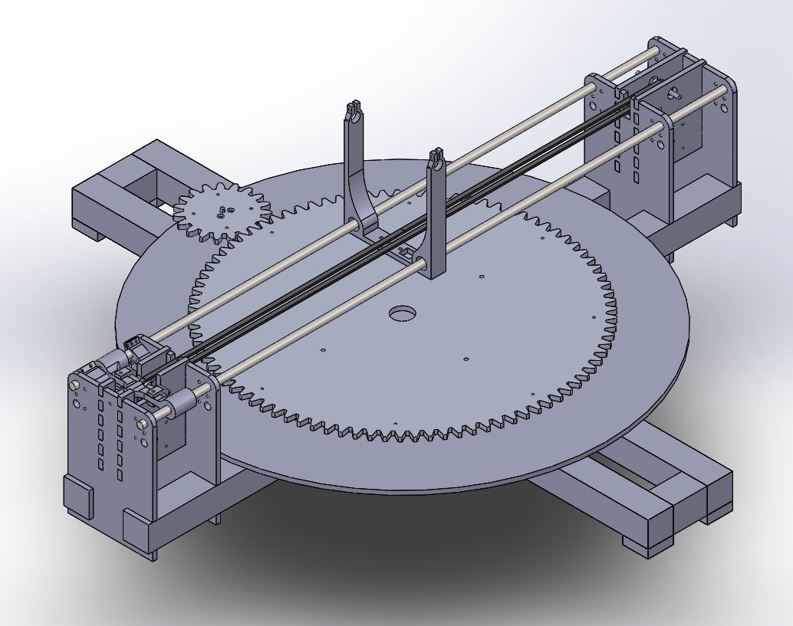
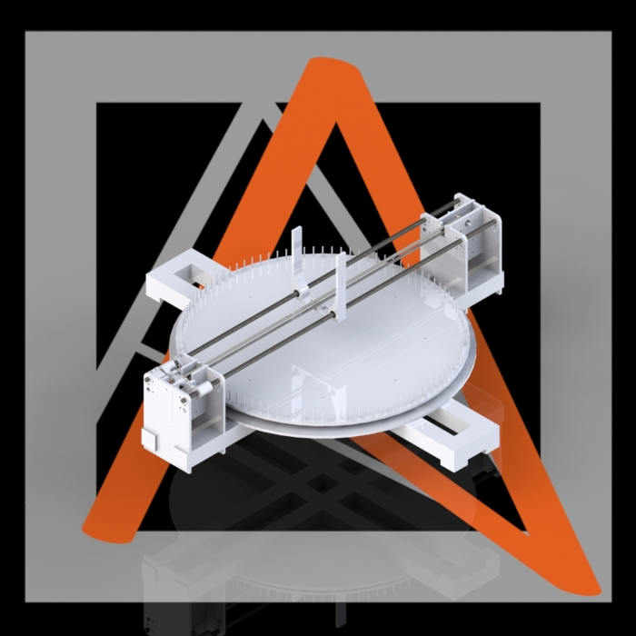

The stringomatic features a variety of pretty neat and clean mechanical features. The two-axis CNC machine has one gantry to facilitate linear motion, and a lazy suzan to facilitate rotational motion. Operating in polar coordinates has multiple advantages. It greatly reduces costs, weight, and complexity of the system, as a rotational axis is much simpler and easier to implement than an additional gantry. Looking at the budget, the total costs for the components for the gantry was almost an order of magnitude more expensive than the components for the rotational bed. The rotational bed gives a pretty unique look to the entire system. The gantry system utilizes precision ground ⅜” steel shafts and linear bearings. It is powered by a single stepper motor and a timing belt. The timing belt system includes a dynamic and fully adjustable tensioner system to finely control the tension within the belt. The rotational bed utilizes a 10” lazy susan, directly driven by a gear connecting to an additional stepper motor.
The frame of the stringomatic is built out of MDF and poplar boards, resulting in a consistent, light, clean, and cost-effective frame. Organic materials were exceedingly easy to work with and provided good ways to make effective changes on the fly.
The nozzle on the string manipulator turned out to be an indispensable part even though it wasn’t mechanically very complex. It had to dispense the string reliably. In our first iteration, we 3D-printed the string dispenser in two parts to make the 3D-printing process easier and glued it together afterward. At that point, however, the control of the nozzle was not precise enough to ensure a collision-free steering. The string dispenser kept running into nails and the comparably large lever arm from the nozzle to the ways caused the string dispenser to break right where we glued it together.
To minimize the risk of breaking, we came up with two solutions. The lower part of the nozzle had to be elastic in order to minimize the torque exerted on the string dispenser so that the string dispenser could run into a nail bend aside. We lifted the tip of the nozzle and extended it with heat shrink tubing that would perfectly bend when hitting a nail but simultaneously jump right back into the correct position after the collision.
Additionally, we ordered a small tube that would be inserted in the upper part of the string dispenser and dispensed the string close to the pegboard extended with the heat shrink tubing. Using the tube, the string dispenser was sturdy enough to withstand the force of the collision.
Our project is a bit unique in that we were able to develop most of the mechanical system in about only a week and a half. Despite how quickly progress happened, we were still left with a robust mechanical system that got the job done--we never really needed to go through multiple iterations of the entire system, as our initial design was good enough. We attribute this swift and efficient development to two major design methods.
Right before the day of the first sprint review, we created a CAD model that contained the major subsystem boundaries and the largest physical components. We were able to develop a comprehensive and relatively clean CAD model in just a single night. This is due to the way in which we decided to model and design components of the assembly.
We used what we coined as "Master Sketches" in order to simultaneously develop both the larger design of the system, as well as how subsequent components interface with each other. This is the first major design method that helped our agile development. In order to minimize repeated work, we developed a series of sketches in a part file that defined the locations of some of the most integral parts of the entire assembly. When making actual parts, we would import this "Master Sketch" file first, and make any part relative to the locations and sizes defined by the Master Sketch. Any size, dimension, and component that could possibly be referenced by more than just one part would have some kind of representation in the Master Sketch. When defined this way, the CAD is really flexible, as changes that are made to the master sketch propagate down to every derived part. In addition, when parts are made, they are made in such a way that they will always interface well with neighboring parts. The Master Sketch allowed us to design everything at once from a top-down direction.
Below is an image that shows the "Master Sketch". Notice how the major components of the system can be seen by at least with rudimentary lines.
Below is an image of the final assembly.
 The second major design principle was always thinking about designing for manufacturing. A mechanical system needs to be built before it can be tested. Because of this significant overhead, it is a lot more important that mechanical designs are well thought out before they are tested. Always thinking about not only how designs would work after we built them, but also how they would be made was super important. In general, we favored designs that would allow us to use rapid prototyping tools such as the 3D printer and the laser cutter in order to quickly make and test parts with a moderate level of precision. This minimized the amount of time that we need to be physically making parts. Taking this emphasis on rapid prototyping even further, we always strove incorporate non-permanent fasteners into the design. This allows for us to test individual parts in a cohesive system, evaluate desired changes to individual parts, and then make changes to those individual parts without having to remake everything. Whenever possible, we avoided using fasteners such as glue in favor of screws or press-fits.